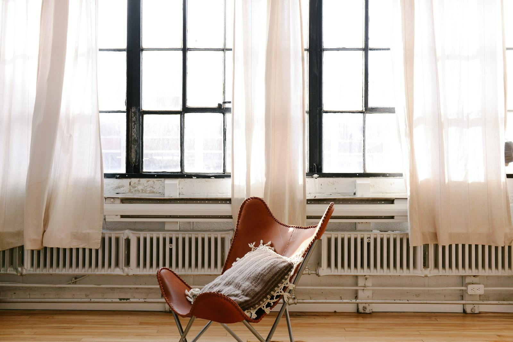

Privat psykologmottagning i Uppsala
Vi kan kognitiv beteendeterapi
Sju legitimerade psykologer och psykoterapeuter i Gårdshuset vid Slottskällan, tio minuter från Uppsala C. Vi tar emot på mottagningen och online i hela Sverige.
- Leg. psykologer
- Tystnadsplikt
- Mottagning i centrala Uppsala
- Videosamtal i hela Sverige
Var ska jag börja?
Säg det med dina egna ord. Vi visar dig vidare.
- Jag sover inte om nätterna. Sömnproblem
- Jag orkar ingenting längre. Stress & utmattning
- Jag kan inte sluta oroa mig. Oro & ångest
- Mitt barn vägrar gå till skolan. Barn & ungdom
- Jag dricker mer än jag vill. Skadligt bruk
- Jag tror att jag har adhd eller autism. Utredning
- Vi bråkar om samma sak, hela tiden. Parterapi
- Jag kan inte sluta tänka på det som hände. Trauma & ptsd
- Jag vet inte var jag ska börja. Hör av dig ändå
Tre ingångar
Vem söker du hjälp för?

Vuxna
Terapi, parterapi, utredning och behandling vid skadligt bruk. För dig som är över 18.
Läs merBarn & ungdom
Behandling och utredning för barn och unga — och stöd till dig som är förälder, lärare eller socialsekreterare.
Läs mer
För organisationer
Handledning, coaching, föreläsningar och utbildning för arbetsgivare, skola, vård och socialtjänst.
Läs merVilka är vi?
Legitimerade psykologer med lång och bred erfarenhet.
KBT-Konsulterna är en privat psykologmottagning i centrala Uppsala. Vi är legitimerade psykologer, legitimerade psykoterapeuter och specialister i kognitiv beteendeterapi. Flera av oss har arbetat inom psykiatrin, BUP, primärvården och habiliteringen, och undervisar eller handleder vid Uppsala universitet.
Vi levererar en gedigen kompetens förpackad i ett varmt och professionellt bemötande. Varmt välkommen till oss.
- Terapi för barn, ungdomar, vuxna och par
- Neuropsykiatriska utredningar i alla åldrar
- Bedömning och behandling vid skadligt bruk
- Stöd till föräldrar och anhöriga
- Uppdrag för företag och offentlig verksamhet
- Handledning, kurser och utbildningar
”Du behöver inte ha någon diagnos för att träffa mig, utan jag träffar även dig som befinner dig i en pågående livskris eller bara känner att du kört fast och hamnat i en återvändsgränd.” Jens Karström, leg. psykolog och leg. psykoterapeut
Medarbetare
Hos oss väljer du en person, inte en mottagning.
Läs om var och en av oss och hör av dig direkt till den du tror passar dig. Är du osäker hjälper vi dig vidare.

Ångest, OCD och beroendeproblem, och stöd till dig som är anhörig. Utbildare i motiverande samtal och lärare i mindfulnessbaserade program.

Legitimerad psykolog sedan 1978. Missbruk och beroende, ångest och depression. Handledare inom psykiatri, primärvård och beroendevård.

Neuropsykiatriska utredningar av barn, ungdomar och vuxna. Femton år inom BUP. Arbetar även genom tolk.

Oro och ångest, fobier och nedstämdhet. Parterapi och föräldrastöd. Tidigare BUP och Studenthälsan vid Uppsala universitet.

Psykologisk utredning och bedömning, inklusive omprövning av tidigare ställda diagnoser.

Trauma och traumabehandling. Prolonged exposure, schematerapi och ACT. Tar emot remisser från Regionen.

Kognitiva utredningar, utvecklingsbedömningar och neuropsykiatri. Forskar om förlust och komplicerad sorg.
Så går det till
Fyra steg, och du bestämmer takten.
Första kontakten
Du skriver eller ringer. Vi hör av oss så snart vi kan och bokar en tid. Du behöver inte ha en diagnos eller veta vad problemet heter.
Gemensam bedömning
Ett till tre samtal där vi tillsammans tar reda på vad du behöver hjälp med — och om du känner dig bekväm med oss.
En plan
Vi formulerar mål utifrån vad som är viktigt för dig, och kommer överens om metod och hur många samtal det troligen handlar om.
Behandling och avstämning
Vi arbetar mot målen och stämmer av regelbundet att behandlingen går i rätt riktning och att vi använder tiden väl.
Priser
Vad det kostar, utan att du behöver fråga.
Enskilt samtal
1 500 kr / 45 min
Parterapi
2 400 kr / 60 min
1 800 kr / 45 min. Ofta behövs minst 60 minuter, eller 2 × 45 minuter per besök.
Gäller privat finansierad terapi och konsultation. Moms tillkommer om arbetsgivare, försäkringsbolag eller socialtjänst betalar. Avbokning senare än 24 timmar före besöket debiteras i sin helhet.
Praktiskt
Var vi finns och hur vi ses.
- Mottagning
- Gårdshuset, Slottskällan, Sjukhusvägen 3, 753 09 Uppsala
Visa på karta - Hitta hit
- I hjärtat av Uppsala, tio minuter från Centralstationen, i en vacker miljö i Gårdshuset vid Slottskällan.
- Öppettider
- Måndag–fredag 09–17. Vi kan erbjuda kvällstider ett par gånger per vecka, både digitalt och på mottagningen.
- Online
- Videosamtal i hela Sverige via Kaddio, med BankID och samma sekretess som på mottagningen. Läs mer
- Remiss och högkostnadsskydd
- Angeli Holmstedt och Jens Karström tar emot remisser från Region Uppsala. För övriga gäller privat taxa.

Ta första steget när du är klar för det.
Skriv eller ring. Vi hör av oss så snart vi kan, och du behöver inte veta på förhand vad du vill ha hjälp med.
Legitimation och medlemskap


Akut hjälp
Behöver du hjälp direkt? Vi är en mottagning med bokade tider och kan inte ta emot akut. Ring 112 vid fara för liv. Du kan också ringa MIND Stödlinje på 90 101, eller söka psykakuten där du bor.